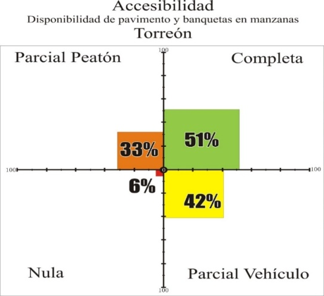

Movilidad y Transporte
Por TrcIMPLAN, 01/10/2014
Coordinador
Guillermo Sandoval
Asesor
Luis Gutiérrez
Secretario
Víctor Gómez
Expertos Invitados
- Enrique Rodríguez
- Lupita Porras
- Faruk Sabag
- Gerardo Berlanga
- Fernando García Tapia
- Alberto Sotelo
- Luis Campos Gonzales
- Elías Agüero
- Erasmo Rodríguez Hdz
- José Guadalupe Escobedo
- José Angel Cuevas
- Sergio Barraza
- Cesar Delgado Guardado
- Joel Jiménez Castillo
- Roberto Serna Aguilera
- Jorge Serna Esparza
- Leopoldo Cervantes Roel
- Otto Schott
- Ramón Hernández Miranda
- Ricardo Valdez
- José Ignacio Corona Rodríguez
- Raquel Mireles
- Octavio Cárdenas
- Tito Escobedo
- Alejandro Caro
- Yonatan Vela
- Jorge Lazcano
- Elías García
- Nadia Núñez
- Ricardo Ramírez Vargas
- Ricardo H. Ramírez Vargas
- Alejandro Moreno Reséndez
- Alejandro Dávila Flores
- Javier Treviño
- Angélica Vesga
- Gerardo Magallanes Rayas
- José Alfredo Burgos Núñez
- Alejandro Dotti
- Irma Patricia Reyes Hernández
Motorización
- De 2000 a 2014 los vehículos motorizados registrados en circulación creció más del 100% (gráfica 1.1 y 1.2)
- Una de las principales fuentes de emisión en la Comarca es la de fuentes móviles; éstas contribuyen con el 98% del total de las emisiones de CO2, seguido de los NOx y los COV con un 35% y 44% respectivamente. La principal razón para la magnitud de estasemisiones es el consumo de combustibles fósiles (gasolinas y diésel).
- Para el caso de los compuestos orgánicos volátiles (COV) los vehículos pick up y los autos particulares, representan la mayor contribución para este contaminante con un 72% del total de las emisiones provenientes de esta fuente.
- La proyección de habitantes para la Torreón se calcula para el año 2030 en aproximadamente 798,014 habitantes, con una tasa de crecimiento anual de 1.25%, teniendo dentro de 16 años (2030) un acumulado de 24% más de habitantes que los actuales.
- En cambio los vehículos motorizados para el 2030 se estarían duplicando, en Torreón pasaría de 226 vehículos por cada mil habitantes, a 501 vehículos por cada mil, es decir, 1 de cada 2 torreonenses usaría un coche, trayendo como consecuencia incremento del consumo energético, aumento de contaminación atmosférica, disminución de seguridad vial, aumento de los costos de congestión, exclusión social, ocupación creciente del espacio. Entre otros.
Grafica 1.1
Grafica 1.2
Movilidad intermunicipal
- La población ocupada de la Zona Metropolitana Laguna se distribuye fuera de su municipio de residencia de la siguiente forma: 4 % de los trabajadores de Torreón trabajan en otro municipio de la ZML, 20 % de los matamorenses, 12 % de los gomezpalatinos y 28 % de los lerdenses. Esto nos señala una dinámica intermunicipal en vivienda y trabajo.
- De la población ocupada que labora en otro municipio que no es donde vive la distribución es la siguiente:
Tabla 2.2 Municipio donde trabajan:
| Personas | Torreón | Gómez Palacio | Matamoros | Lerdo | Fuera de ZML |
|---|---|---|---|---|---|
| Torreonenses | N.A. | 48.10% | 5.70% | 6.70% | 39.50% |
| Gomezpalatinos | 45.30% | N.A. | 0.20% | 14.70% | 40.00% |
| Matamorenses | 95.50% | 4.20% | N.A. | 0.30% | 10.90% |
| Lerdenses | 28.10% | 50.60% | 0.40% | N.A. | 20.90% |
Elaboración propia con datos de INEGI 2010
- La relación de la población ocupada que vive en Torreón y labora en Gómez y viceversa es la más significativa. Tenemos que resaltar el hecho de que a pesar de la cantidad de personas que cruzan el lecho seco del Rio Nazas la infraestructura para facilitar el tránsito está diseñada para vehículos motorizados siendo cinco los puentes que conectan ambos municipios en su zona conurbada.
Infraestructura y transporte público
La ciudad de Torreón cuenta con aproximadamente 281.85 km de longitud entre vialidades principales, vialidades secundarias y vialidades periféricas que soportan un total de 1,818,952 viajes diarios* repartidos entre los modos de transporte más significativos:
Tabla 3.1 Incluye viajes de la población de Matamoros y se considera 2.5 viajes por persona. 2011. Logit.
| Medio de transporte | Cantidad | Porcentaje |
|---|---|---|
| Automóvil | 757,301 viajes | 42.0% |
| A pie | 341,181 viajes | 19.0% |
| Autobús urbano | 277,991 viajes | 15.0% |
| Bicicleta | 34,196 viajes | 1.8% |
- El tiempo que el pasajero pasa dentro de la unidad es de 45 minutos en promedio, más 10 minutos de espera para el abordaje de la unidad (Transconsult, 2014). Para ilustrar la situación en términos de eficiencia y productividad de los 111,196 usuarios diarios de transporte público y para tener una comparativa, al invertir una hora de tiempo de todos los trabajadores de la región, se dejaría de generar 37 millones de pesos diarios. Si se invierten solamente 25 minutos se dejaría de generar 15 millones de pesos diarios.
Accesibilidad
- La ciudad de Torreón cuenta con 281 km longitudinales de vialidades principales, secundarias y periféricas y 0.50 km de vialidades peatonales (únicamente dos calles).
- En el caso de Torreón la mitad de las manzanas cuenta con una infraestructura completa (pavimento y banquetas), ya que los vehículos y lo peatones pueden circular aparentemente sin contratiempos (se considera la existencia o no de la infraestructura, no el estado físico actual). Es decir 5,249 manzanas cuentan con todas sus vialidades pavimentadas y con banquetas y sólo 577 manzanas no cuentan con pavimento ni banqueta en sus vialidades.

- Al observar la correlación entre la existencia Grafica 4.1 de pavimento y banquetas, se detecta un patrón que se repite en las cuatro ciudades: la accesibilidad a las banquetas es más limitada que el acceso a vialidades pavimentadas.
Accesibilidad para personas con discapacidad
- En cuanto a disponibilidad de rampas para sillas de rueda en las banquetas. el municipio de Torreón tiene una mayor cobertura que el resto de los municipios que integran la ZML (14.3%). Por su parte, Gómez Palacio cuenta con la menor cobertura (8.9%). A su vez la población con limitación para caminar es del 2.2 % siendo en total 28, 555 en la ZML.
- Continuando con el ejemplo de las banquetas con rampas para sillas de ruedas se muestra latabla 5.2 con la población que tiene limitación para caminar o moverse, subir o bajar en la ZML.
- El centro de la ciudad de Torreón es una zona atractora de viajes de la Comarca Lagunera, por lo que comparamos la infraestructura existente para personas con discapacidad contemplando la disponibilidad de rampas en las banquetas con la que cuenta una colonia fuera del centro, es este caso Las Carolinas, y mientras en el centro el 82.5 % de las banquetas cuentan con rampas en la Colonia sólo el 1.8 %.
Accidentes provocados por vehículos motorizados
- A pesar de que la tasa motorización nos muestra que en Gómez Palacio y Lerdo existen más vehículos registrados por cada mil habitantes que en Torreón, la tasa de accidentes es mayor en Torreón. De cada mil vehículos 12 sufren algún accidente de tránsito en Torreón contra 10 en Gómez Palacio, 9 en Matamoros y solo 6 en Lerdo. Esto nos pudiera sugerir que los coches circulan más tiempo en Torreón que en donde han sido registrados. Ahora, por cada 100 accidentes de tránsito en la ZML, cinco tienen consecuencias mortales.
Educación vial
- Para el diseño de infraestructura vial se contempla las necesidades de la población, complementadas con el desarrollo de normas viales traducidas a reglamentos para hacer un uso eficiente de la infraestructura, así como para salvaguardar la seguridad de los usuarios de la red, ya sean conductores, pasajeros o peatones.
- La tasa de defunciones de peatones involucrados en accidentes viales (atropellamiento) por cada 100,000 habitantes, mientras en Torreón pasó de 4.8 decesos de peatones en 2010 a 5.4 en 2012, en la ciudad de México pasó de 5.3 a 4.6.
- En el caso específico de los viajes a pie, lo que podemos deducir de la tabla comparativa es lo expuesto que puede estar un peatón por no formar parte conscientemente del sistema y uso de la misma estructura vial así como de la reglamentación que regula su uso.
Se insertarán las conclusiones al término
Bienvenida
- Lic. Eduardo Holguín - gobiernos encargados del desarrollo económico y social. dejar la planeación para los ciudadanos.
- C. Ignacio Chong - desaparición de culturas, comunidades, ciudades. planes pasados fallidos acerca de la ciudad. (sin la participación ciudadana). Importancia de la creación del IMPLAN “el IMPLAN es de todos”.
Inauguración
- Lic. Miguel Mery Ayup - plan de desarrollo municipal. reglamentos de movilidad y graffiti. competitividad. importancia de la gobernanza metropolitana, plan estratégico metroplitano. a los gobernantes se les conoce por sus amigos y por los libros que leen.
Conceptos Básicos
- Presentación del asesor del IMPLAN Arq. Rafael Pérez Fernández, fundador del IMPLAN León.
- Explicación de las etapas del pem. importancia de los proyectos emanados del IMPLAN, no documentos sino colectivos de lideres. ejemplos de éxito en león. centro de convenciones león.
- Explicación de la estructura del IMPLAN. consejo directivo, grupo promotor, directoor ejecutivo IMPLAN y comisiones técnicas.
- Proceso de gestión integral: planeación, implementación de proyectos y evaluación.
- Planeación prospectiva
Dinámica del taller – Indicadores
- Rodrigo González Morales - presentación del diagnóstico básico e indicadores.
- Buen Gobierno: fondos metropolitanos, continuidad, mejora regulatoria.
- Desarrollo Social: zonas de vulnerabilidad, rezago educativo, fondos de apoyo para la cultura, maternidad adolescnete.
- Desarrollo Económico e Innovación: productividad laboral, clusters, empleo y desempleo, índice de competitividad económica por imco. sectores por desarrollar.
- Sustentabilidad y Medio Ambiente: usos de agua en la región lagunera, calidad del aire, radiación solar, consumo energético, áreas verdes por habitante.
- Movilidad y Transporte: motorización a futuro, movilidad no motorizada, peatonalización, rampas para discapacitados, defunciones por atropellamiento de peatones.
- Entorno Urbano: crecimiento del área (mancha) urbana frente al crecimiento de la población, decrecimiento de la población, viviendas deshabitadas, cobertura de servicios públicos (alumbrado público, agua potable, drenaje).
Expliación de dinámica
- Ejercicio de diagnóstico por mesas (principales problemas y causas/agravantes).
- Expliación de la dinámica por parte del coordinador Francisco Adame.
- Regidor Roberto Rodríguez: IMPLAN como instituto metropolitano, problema como ciudad ya que existen dos estados. por lo tanto, promover legislación normativa metropolitana y no como forma de alcaldías. no volver a crear IMPLANes por ciudad (gómez, lerdo, matamoros) sino un solo IMPLAN metropolitano.
- Transparencia: que no se politize ni se partidice. crear institutos independientes dedicados a la transparencia, descentralizados y ciudadanos. creados por académicos.
- Servicios civil de carrera: continuidad de servidores públicos. crear perfiles para cada dependencia y no poíticas.
- Mejoras regulatorias: rapidez de trámites.
- Francisco Adame hace incapíé de que el taller es diagnóstico y dejar las propuestas del lado).
- Gabriel: crear instituciones, reglamentos anticuados y no están homologados en los 4 municipios. transparencia no sólo ¿qué están haciendo? sino rendición de cuentas. como lo gastaron, para qué lo gastaron y cuanto gastaron?.
- Homologación metropolitana reglas de operación en los fondos metropolitanos.
- Comisión de zonas metropolitanas. darles dar voz y voto a los alcaldes en cuestión de comités de fondos metroplitanos.
- Instituto metropolitano de planeación y no munuicipal. para darle aplicación de fondos metros.
- No reciclar proyectos ni obras por no tener cartera de proyectos actualizada y descoordinación por diferentes municipios
- Ricardo Segura (participación ciudadana): no existe participación ciudadana. no existe creediblidada en lo que hacen las autoridades. que el IMPLAN llegue a ser “para lo que fue hecho”, hacer incapié de que el IMPLAN se empezó a crear con la administración pasada de Eduardo Olmos, y no en ésta como se dijo en la presentación.
- De lo que se hable esté respaldado por un hecho. el IMPLAN debe tener autonomía e independencia, las autoridades deben de mantenerse al márgen. debe ser respaldado por ciudadanos que estén revisando y controlando sus actividades. que el IMPLAN no sea un proyecto más de los que ya hubo.
- Luis Rafael Olivares García: planeación municipal. hacerla metropolitana. pero también falta la planeación regional. regional, no solo metropolitana. enfocar el diagnóstico hacia un ámbito regional. 16 munipios de la comarca lagunera.
- Luis Felipe Rodriguez: clave del bueno gobierno es rendición de cuentas: existiría mayor eficiencia con transparencia hacia los ciudadanos.
- Regulaciones públicas. mecanismos más eficientes de transparencia, monitoreo de cabildo. no basta con informes municipales anuales, sino otros mecanismos mas periódicos.
- M.E. Juan Antonio Rodriguez: Mecanismos legales que obligen a las administraciones que atiendan a la cartera de proyectos emanada del IMPLAN. generar una reglamentación para que el desarrollo vaya orientado a este plan estratégico. observar los índices en ej. área educativa. desarrollo de capital humano.
- Que los cabildos tengan la visión de dónde dar orientación de áreas libres para crear áreas verdes. fraccionamientos. ordenamiento del territorio en cuanto a vivienda para evitar el crecimiento horizontal.
- M.C. Raúl Medina Martínez: inclusión de las universidades. no solo como observadores si no darles responsabilidades.
- Seguridad y tenencia de la tierra genera problemas legales
- Eduardo castañeda (CLIP): seguridad mientras no haya seguridad no se podrán ejecutar los planes emanandos de los diferentes planes. el IMPLAN debe enfocarse en seguridad límites a los endeudamientos de los gobiernos la tesorería estatal acaba de aprovar nuevos adeudos por $4,000,000,000. los diputados apruevan estos prestamos. tener transparencia en cuanto a ellos. a donde van, quienes son los acreedores etc.
- Luis Rayas: separar el trabajo técnico de los ciclos políticos. mesa de concertación política que le de viavilidad y continuidad al trabajo técnico. como región, tenemos 2 gobernadores y 4 alcaldes, no hay concertación.
- Miguel Ángel de la Rosa: no hay gobernanza los gobiernos estatal y municipales dividen a una región que naturalmente es una solo.
- Regulación en transporte metroplitano, transporte público es municipal y genera muchos problemas. integración de la región se da por la sociedad y el gobierno desintegra por medio de diferentes cuotas que no están homologadas como metropoli.
- No se realizan servicios públicos desde el punto de vista del ciudadano. Se satisface al servidor público en los servicios pero no al ciudadano. acortar tiempos y trámites, filas. “sufrir para pagar” trámites muy complicados. no existe información.
- No existe educación vial para la limpieza, formación de valores. los ayuntamientos no promueven los valores, justicia, respeto y honestidad.
- No existe un sistema de vialidad integral metroplitano el cruce del río nazas es un borde entre las ciudades. cohesionar físicamente las ciudades.
- Negocios con ayuntamientos no existe un buen pago a proveedores, altas a proveedores. los pagos son tardados e inciertos.
- Estructura urbana las vialidades son complicadas. no hay señalética. los blvds no son “claros”. los ciudadanos se exponen a la corrupcion. accesos entre gómez y torreón.
- Rafael Olivares García: sentido de abandono por parte de las autoridades estatales. generó una “válvula de escape” que es el fondo metroplitano, y está destiado a obras.
- Visión metroplitana real más alla de la obra. la planeación realmente sea metroplitana y estar presentes gómez, matamoros y lerdo.
- Definir una dinámica metropolitana, no tanto regional (Rodeo, San Luis).
- Los ayuntamientos se centran en proyectos sin planeación a largo plazo. que atiendan a indicadores reales.
- No hay interés del ciudadano en cuestiones públicas.
- No existe participación ciudadana, y cuando existe, espera que el gobierno apoye y subenicione económicamente. construir un instituto de planificación metrpolitano a largo plazo. ciudadano. sin necesidad de depender de los gobiernos. que obligue a los municipios que su planeación presupuestal y de obra incida en indicadores muy específicos.
- Miguel Crespo: fractura fundamental por un lado están los ciudadanos y por otro las autoridades.
- Ser autoridad es superior en ingresos, posiblidades. es una fractura histórica y cultural. se buscan formas sofisticadas de instituciones débiles solo trabajan desde la visión de la autoridad. se crean institutos ciudadanos que le dan la espalda a otros que han trabajado por la transpaencia. son débiles porque las decisiones que toman no tienen arraigo ni fundamento. lo que creen que es bueno para los ciudadanos.
- Vulnerabilidad ciudadana el ciudadano es vulerable en su condición, necesidades y problemas no son atendidos sino profundizados. cada decision que se toma, lo hace más vulnerable. los que toman las decisiones la toman para elevar mas la posicción.
- Los ciudaddanos que se suben a cámaras y otros puestos, se convierten y transforman. genera un empobrecimiento del sentido de lo público. “un baño público” a nadie le importa el otro, todos lo dejamos sucio. si no se generan mecanismos que no cierren la brecha entre ciudadano y autoridades.
- Si este taller es sólo para legitimizar lo que la autoridad ya tiene establecido.
- Inseguridad, violencia tiene que ver con la brecha.
- Dr. Maribell Felicitaciones al Lic. Holguín la ciudad tiene una enfermedad como la obesidad con síntomas como desigualda, violencia social, sueldos bajos, transporte público deficiente. los ciudadanos en veces no participamos
- Durante décadas ha habido planes y comisiones que terminan en un cajón. porque el gobierno cambia cada vez y “todo lo anterior se tiene que borrrar y se echa a la basura”. si esto va a pasar, no tiene caso el venir a validar lo que ya se tiene hecho. los críticos sociales que se les da un puesto en el gobierno, no pueden dar parte y juez.
- Se tiene que llevar el plan con transparencia. largo plazo con candados jurídicos que den la seguridad que esto va a durar en 20 años. lo cocecharan en una o dos generaciones.
- Lo importante de venir aquí no es validar el plan ya hecho, sino observar de la continuidad del plan sino el “paciente va directamente a la muerte”
- Leticia Castaño (Diputada electa): desencanto al pormayor por falta de trabajo de todos de no hacer las cosas.
- Los servidores públicos siguen siendo ciudadanos. servicio civil de carrera. evitar trámites largos de los que se hablaron planeación metroplitana homologación de reglamentos que ya se es´tan haciendo (20 renovados) en qué se pueden poner de acuerdo los gobiernos de la zona metroplitana? en reglamentos.
- Que los ciudadanos que pasan a ser servidores se les olvida su estado de ciudadadanía. se pierde el compromiso. “aunque estemos desencantados, no aflojarle” que empezemos ahorita para que dentro de 20 años, las próximas generaciones cosechen lo que ahorita sembramos. para que haya corrupción se necesitan dos partes: gobierno y ciudadanos.
- Los valores los aprendemos en casa, no es una tarea gubernamental
- Servicio civil de carrera y que el IMPLAN se fortalezca
- Regidor Roberto Rodríguez: un problema que no está en la lista del centro: lo que no está prohibido en la constitución está permitido para los estados. un marco jurídico. “hay que darle dientes al IMPLAN” que funcione independientemente de los partidos y administraciones.
- Que el IMPLAN tenga posibilidades de gestión en cuestión de usos de suelo y zonificación. y garantía presupuestal.
- Que tenga las facultades que ante cualquier uso de suelo, licencia de construcción haya un dictamen del IMPLAN.
- Problema histórico de corrupción como país.
- Raúl Medina: inclusión de las universidades.
- 10,0000 universitarios. que no están invitados dónde están los representantes de las universidades.
- "porqué traer a alguien de fuera de león, si en pobreza está peór"
Réplicas
- Juan Antonio: congresos reconoscan al IMPLAN como organo regulador con todos sus parámetros y la autoridad ejecutiva a esa parte legal.
- Rafael: reglamentar un órgano que tenga facultades para reglamentar.
- Juan Antonio: creación de capital humano.
Explicación de dinámica
- Se explicó por tarte del asesor del IMPLAN, la dinámica grupal de diagnóstico intermesas.
- Ejercicio grupal de diagnóstico (intermesas)
Revisión de aportaciones
- Temas rescatados de las aportaciones (no todos)
- Trabajo social de base, información y consulta a cada sector de la región.
- Orden y certeza jurídica.
- Falta de continuidad en las políticas públicas
- Analizar los indicadores de competitividad del imco
- Falta de atención por parte del gobierno a su personal
- Falta de atención y concentización. participación
- Índices de evaluación para comparar lo alcanzado.
- Mecanismos para revocar mandato de funcionarios.
- Creación de capital humano.
- Falta de capacidad y visión del perosnal del gobierno.
- Falta de plataformas tecnológicas.
- Continuidad de proyectos independientemente de los nuevos gobiernos.
- Mecanismos que procesen transparencia.
- Marco jurídico, transparencia y rendición de cuentas.
- Involucrar al ciudadano en las tareas de gobierno.
- Transparentar todos los programas de gobierno utilizando la informática y tecnología
- Hay preferencias por saltillo
- Capacitación de servidores públicos
- Promover incentivos a las energías renovables
- Estimulación de la participación ciudadana, que se conviertan en actores
- Falta de credibilidad por parte de los ciudadanos. la iniciativa privada debe participar
- Transversalidad entre las dependencias y municipios
- Falta de trabajo coordinado gobiernos federales, estatales y municipales
- Mecanismo interinstutucional para formaicón de políticas públicas y gobernanza
- Certeza jurídica
- Rediseño del gobierno metropolitano.
- Debilidad institucional
- Evaluación y desemeño en funcionarios públicos
- Rediseño del sistema de contrapeso. impunidad. resultados reales
- Marco normativo de rendición de cuentas. no solo a congresos y regidores.
- Excesivo gasto en gobierno.
- Observatorio ciudadano con consejos cambiantes.
- Falta de planeación a largo plazo.
- Utilización de tecnología y sistemas de información. en el actuar diario del funcionario.
- Mecanismos que propicien transparencia. reglamentación y seguimiento.
- Cumplir y hacer cumplir las leyes.
- Falta de concientización del gobierno hacia su personal para atención.
- Falta de visión de servidor público. está para servir, no para que le sirvan.
- Participación ciudadana, no ser receptores sino actores.
- Detectar las verdaderas necesidades en la población conocer a fondo a sus ciudadanos.
- Impulsar consejos ciudadanos. esquemas de abajo hacia arriba. comités de colonias, asociiaciones de barrios etc.
- Difusión de los organismos para hacer sustentables los programas.
- Falta de capacitación del ciudadano en temas de gobernanza
- Enfoques anacrónicos. faltan procesos participativos e influyentes.
- Todo nuevo alcalde trae nuevas ideas y no hay seguimiento.
- Presupuestos ciudadanos.
- Nulos presupuestos participativos. ciudadano supervise, participe
Ejercicio individual de futuro tendencial (ponderación)
- Puesta en común de futuro tendencial
- Aguirre: urgente atacar marco jurídico. todo es importante, pero lo que es trasendente es tener las herramientas jurídicas de hacer que esto funcione metropolitanamente.
- Regidor Roberto Rodríguez: marco jurídico
- Rafael: marco jurídico
- Miguel Ángel de la Rosa: solo 4 zonas metropolitanas son iguales a la laguna en el país. y más similares: la ciudad de méxico y la laguna. el gob federal debe dar trato preferencial por sus condiciones de estar en 2 estados diferentes (df en 3). gobernanza, que exista la autoridad metropolitana. como hacer para que esta vez si valga la pena “y no venir a engordar el caldo”. mas alla de la foto y del diploma.
- Marcos Ezequiel Solis Vega: marco jurídico.
- Miguel Mery Ayup: marco jurídico. planeación, ausencia civil de carrera, transparencia y al final participación ciudadana. partir del fortalecimiento del marco jurídico, se fortalece la institución de gobierno, en donde participe la sociedad.
- Luis Felipe Rodriguez: falta de planeación a largo plazo. como segundo elemento, marco jurídico. si se cumplen las primeras dos, por default se dan las otras.
- Juan Antonio: vender la idea. ganarse la voluntad política que permita que el IMPLAN sea un proyecto que trascienda. este “bache” se puede superar con estos instrumentos.
- Raúl Medina Martinez: darle certeza al IMPLAN, si no le da, se acaba.
- Se retiraron Ricardo Segura, Crespo, Eduardo Castañeda y Marcos Zamarripa.

{kind=link}